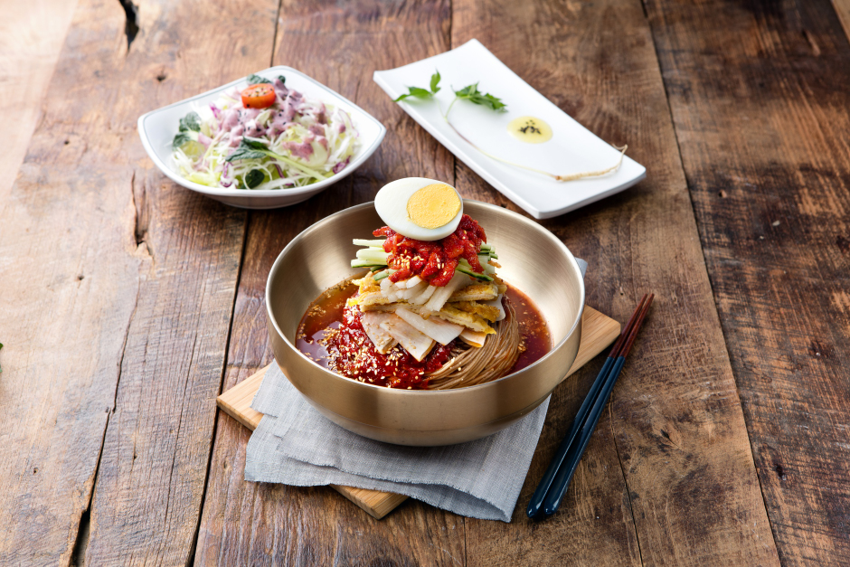

진주냉면

진주냉면은 예전부터 유명했다. 문헌상 냉면에 관한 최초 기록이 나온다는 '동국세시기'(1849년刊)에 냉면을 "메밀국수에 무김치, 배추김치를 넣고 그 위에 돼지고기를 넣은 냉면이 있다"고 기록하고 있다.
평양냉면이 메밀가루에 녹말을 약간 섞어 만드는데 비해 진주냉면은 순 메밀만으로 만들고 돼지고기를 쓰지 않는 것이 특징이다. 평양냉면은 육수를 소 사골과 양지육을 주재료로 하는 데 비해 진주냉면은 멸치, 바지락, 건홍합, 마른명태 등 해산물에다 표고버섯을 넣어 만드는 것에 차이가 있다.
한국전쟁 당시 평양과 함흥 사람들이 진주에 피난 와서 냉면집을 열었는데 장사가 되질 않았다. 그 이유를 몰랐으나 나중에 진주냉면의 우수함을 이해하고 후회했다고 전해진다.으로 양념한 육회를 반드시 얹어 먹는다.
평양냉면이 메밀가루에 녹말을 약간 섞어 만드는데 비해 진주냉면은 순 메밀만으로 만들고 돼지고기를 쓰지 않는 것이 특징이다. 평양냉면은 육수를 소 사골과 양지육을 주재료로 하는 데 비해 진주냉면은 멸치, 바지락, 건홍합, 마른명태 등 해산물에다 표고버섯을 넣어 만드는 것에 차이가 있다.
한국전쟁 당시 평양과 함흥 사람들이 진주에 피난 와서 냉면집을 열었는데 장사가 되질 않았다. 그 이유를 몰랐으나 나중에 진주냉면의 우수함을 이해하고 후회했다고 전해진다.으로 양념한 육회를 반드시 얹어 먹는다.